O primeiro rio do jogo existe, e é ainda maior do que cabe no rodapé da tela. Aqui está o Araguaia de verdade: de onde ele vem, quem vive na beira dele e o que nada lá embaixo.
O Araguaia nasce em Mineiros, em Goiás, e corre para o norte por mais de dois mil quilômetros, banhando Goiás, Mato Grosso, Tocantins e Pará, até se juntar ao Tocantins. Ele passa bem na fronteira entre o Cerrado e a Amazônia, e por isso tem bicho e planta dos dois. E tem uma raridade: é o último grande rio do Cerrado sem barragem no leito principal.
O rio vive de subir e descer. Na cheia, ele alaga as planícies em volta. Na seca, volta para o canal e deixa à mostra praias de areia branca, feitas do sedimento que a água traz do Planalto Central. No meio do caminho fica a Ilha do Bananal, a maior ilha fluvial do mundo, cercada pelo Araguaia e pelo Javaés. E na água vive um boto que pesquisadores descreveram em 2014 como espécie própria, o boto-do-araguaia. Nem todo cientista concorda que ele seja uma espécie à parte, e a discussão continua.
Os Iny Karajá vivem na beira do Araguaia há gerações, na Ilha do Bananal e em aldeias como a Buridina, em Aruanã. As mulheres karajá fazem as bonecas de cerâmica ritxòkò, reconhecidas como Patrimônio Cultural do Brasil pelo IPHAN em 2012. A própria cidade de Aruanã tirou o nome do rio: em 1939 ela trocou o nome Leopoldina pelo de um peixe do Araguaia, que também é o de uma dança karajá. E todo julho, na seca, o rio vira a praia de Goiás. Famílias levantam acampamentos na areia, e as cidades da beira recebem perto de um milhão de turistas nas férias do meio do ano.
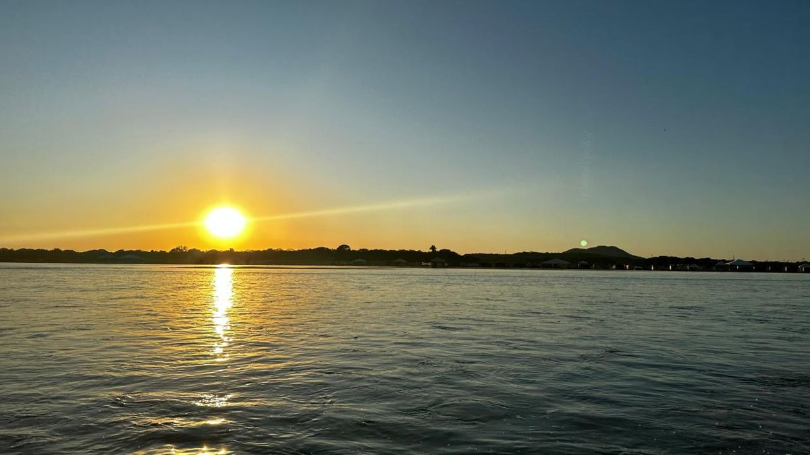
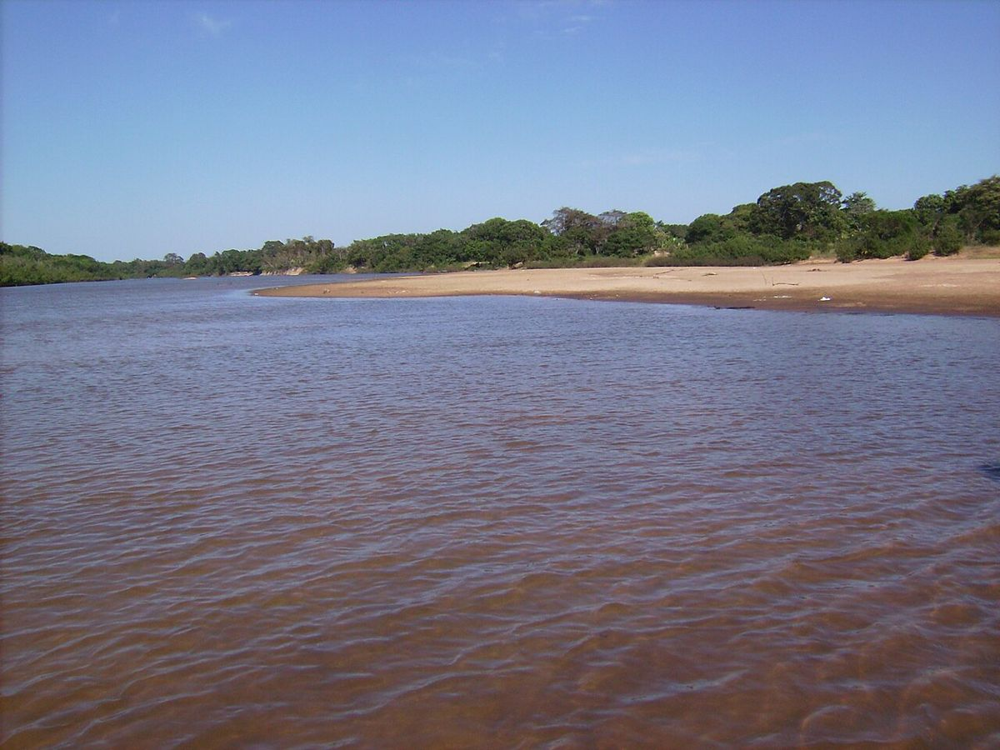
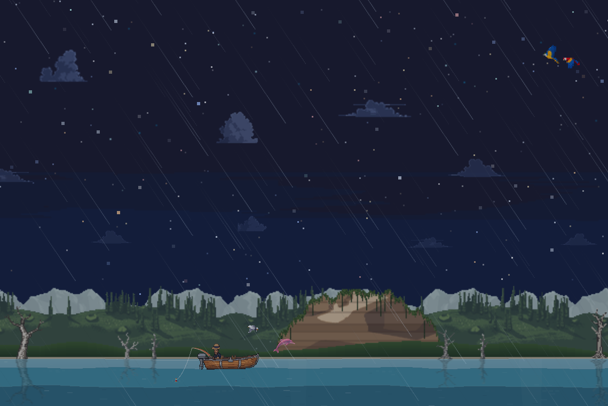
Quase tudo o que aparece desenhado no cenário existe de verdade na beira do Araguaia.
É a floresta que acompanha os córregos do Cerrado, com as copas fechando por cima da água como um túnel verde. Na beira de rio largo, como o próprio Araguaia, a faixa de mata não fecha o túnel e ganha outro nome: mata ciliar.
Campo sem floresta que fica encharcado ou com água rasa de dezembro a março e seca forte de junho a setembro. No meio dele surgem montinhos de terra de até vinte metros de largura, os monchões.
Aparecem quando o rio baixa. É neles que o tracajá e a tartaruga-da-amazônia enterram os ovos, e é perto deles que o boto encurrala cardumes, num comportamento conhecido como estouro do boto.
Acampar na praia do Araguaia é tradição goiana. Na seca, as famílias levantam ranchos de palha e madeira na areia, muitos cobertos com folha de babaçu. O problema é o que fica para trás: lixo e material de construção deixados na praia depois da temporada.
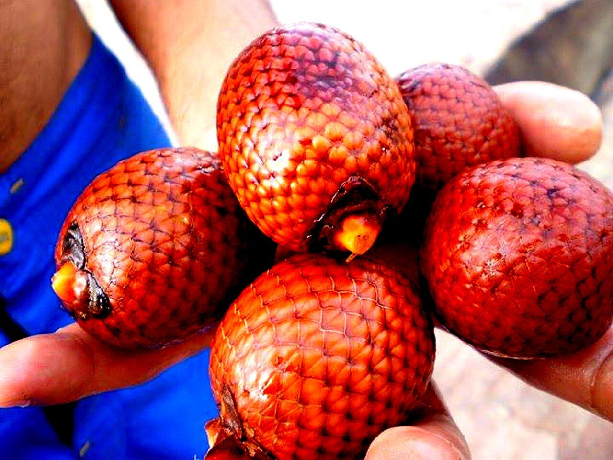
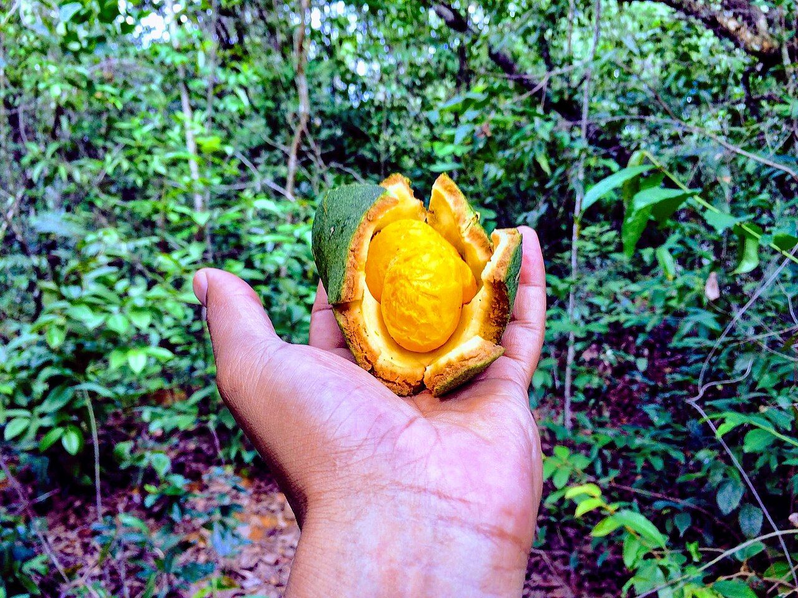
Palmeira das terras baixas que alagam, que forma os buritizais na beira de rios e córregos e é abundante ao longo de todo o Araguaia. Há pé macho e pé fêmea. Da folha sai cobertura de casa e fibra para rede, esteira e chapéu, e o fruto alimenta bicho e gente.
Árvore das matas do Cerrado, de madeira de alta qualidade e fruto que se come.
Árvore da mata ciliar, a faixa de floresta na beira do rio. Serve de alimento para aves, peixes e mamíferos.
Dá o pequi, de uso largo na cozinha goiana. Cresce no cerradão, uma mata de árvores de até quinze metros que fica entre o campo aberto e a floresta úmida.
O ipê-amarelo é símbolo do Cerrado, conhecido pela florada e pela madeira nobre. Ele cresce também na mata ciliar. Floresce de julho a setembro, na seca: um engenheiro florestal explica que, com mais flores no tempo seco, a árvore dá sementes que germinam quando a chuva volta. As flores atraem abelhas e beija-flores.
Dá flores roxas, que costumam abrir entre maio e julho, antes dos ipês amarelos. A árvore adulta chega a 30 metros e ocorre em todos os biomas brasileiros, menos nos Pampas, de preferência em floresta que perde folhas na seca. Serve de madeira de lei e de planta medicinal. Foi a primeira espécie nativa do Cerrado a ter o genoma sequenciado.
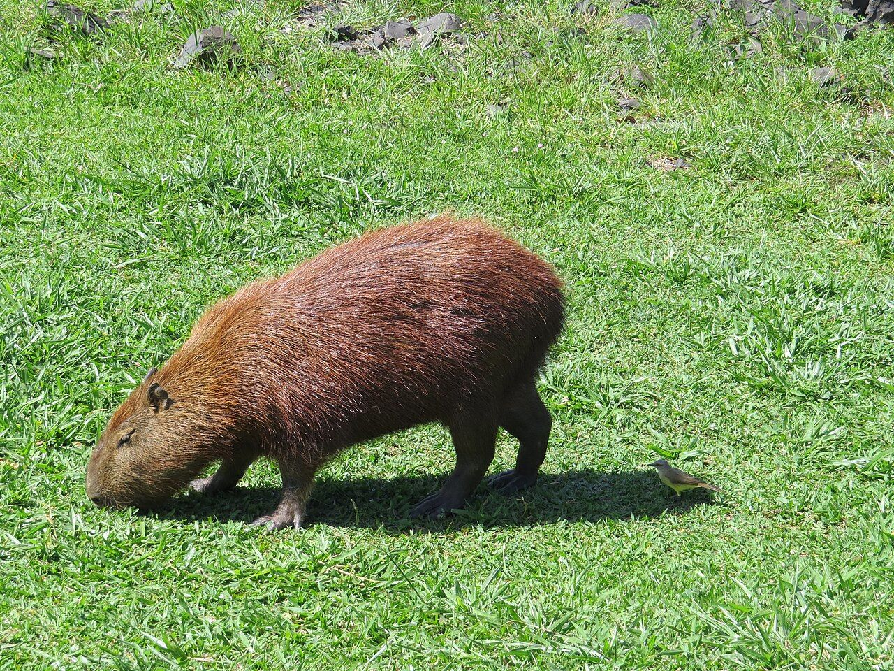
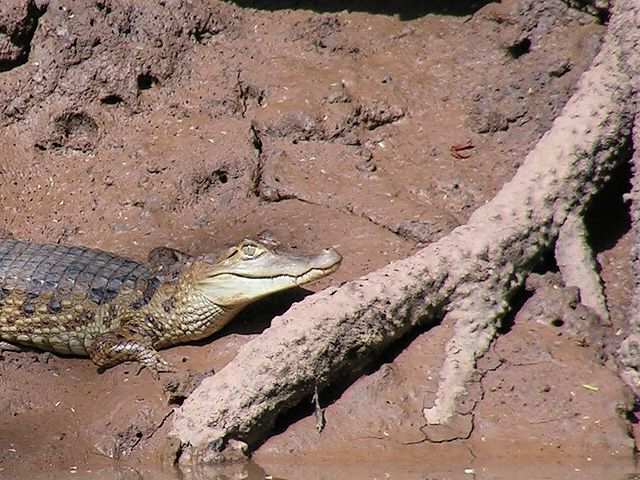
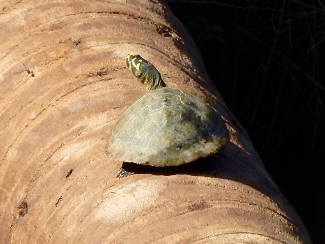
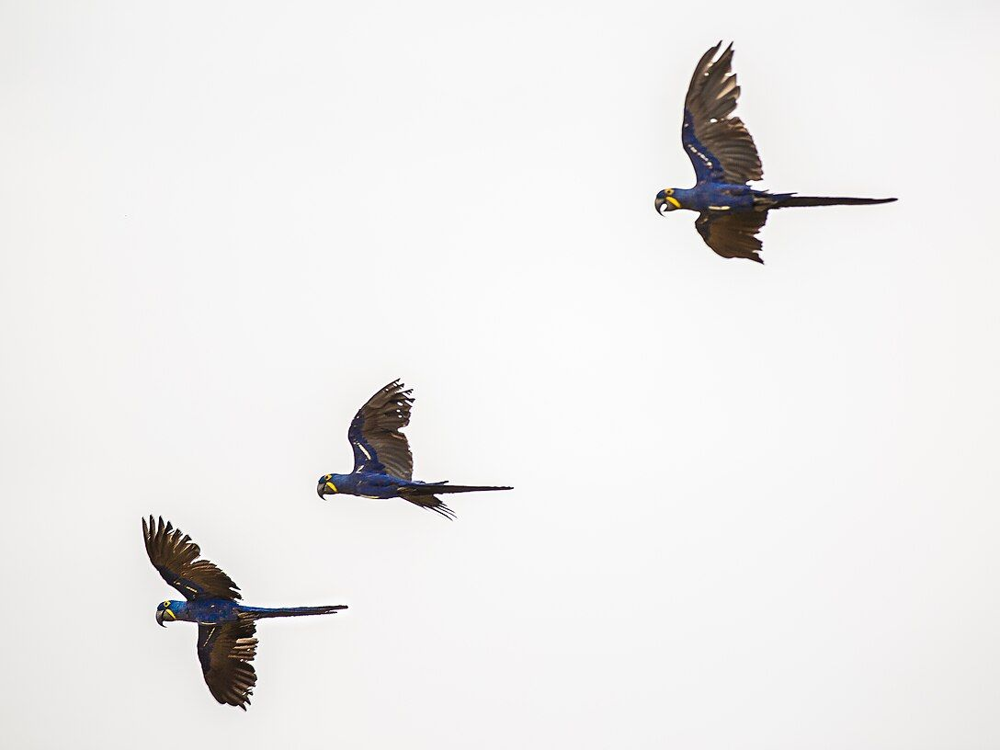
O maior roedor do mundo, e vive perto da água. Aparece entre os mamíferos registrados pelos pesquisadores nas expedições recentes pela bacia do Araguaia.
O jacaretinga é numeroso nos lagos rasos do médio Araguaia. O jacaré-açu, cujos machos chegam a seis metros, quase sumiu com a caça por couro nos anos 1960 e hoje volta a crescer no rio. O olho aceso de noite é de verdade: pesquisadores contam jacarés pelo brilho dos olhos na luz da lanterna.
Vulnerável à extinção, ainda aparece nas armadilhas fotográficas dos pesquisadores no Araguaia. Um estudo do Instituto Onça-Pintada apontou o rio, com o Tocantins, como a melhor ligação entre as regiões do Brasil que ainda têm populações viáveis de onça.
Tartaruga de rio que, de julho a outubro, sobe nos bancos de areia para desovar. Cava um ninho raso e põe de dez a vinte e cinco ovos. Em volta da Ilha do Bananal, pesquisadores estudam as praias onde ele e a tartaruga-da-amazônia desovam.
Tem um esporão de osso na dobra da asa e faz o ninho num buraco raso raspado no chão. Para afastar quem chega perto, finge estar ferido, e o macho pode partir para bicar.
No jogo passam a canindé, azul e amarela, a vermelha e a arara-azul, toda azul. A canindé anda em casal ou em trio e faz ninho em buraco de palmeira morta. A arara-vermelha-grande gosta do fruto do buriti. A arara-azul é uma das aves ameaçadas que ainda se observam na região.
Os doze peixes do Araguaia no jogo, do barranco ao fundo do poço. Quando o nome popular vale para mais de uma espécie, o cartão avisa.
Bagre pequeno que vive e come no fundo: larva de inseto, alga, molusco, peixinho e pedaço de planta. Na bacia Araguaia-Tocantins, o nome Pimelodus blochii acaba aplicado a qualquer mandi do gênero, e esses peixes nunca foram estudados a fundo para saber quantas espécies são. É comida importante na mesa ribeirinha.
Piau é nome de vários peixes do gênero Leporinus, e o apelido flamengo aparece em mais de um deles: o flamenguinho, de oito faixas no corpo, e o aracu-flamengo, que come planta, fruto e folha.
Curimba, curimatã e curimbatá são nomes dos peixes do gênero Prochilodus, e na bacia do Tocantins vive o Prochilodus nigricans. Ele come detrito, a matéria orgânica do fundo. Viaja em grandes cardumes duas vezes por ano e desova quando a cheia começa.
Peixe comprido de boca virada para cima, que salta fora da água para pegar besouros e outros insetos. Quem cuida da cria é o macho: carrega ovos e filhotes na boca por cerca de seis semanas. É o peixe que deu nome à cidade de Aruanã.
Tem um par de presas tão grandes na mandíbula que a maxila tem dois buracos para guardá-las com a boca fechada. Fica de tocaia atrás de galhos e pedras e ataca peixes de até metade do seu tamanho. O nome vale para mais de uma espécie, e no Araguaia a cachorra-facão está entre os peixes mais pescados.
A adulta tem olho vermelho e caça em canal fundo e corredeira, comendo peixe pequeno e arrancando nadadeira e carne de peixe maior. Em 2012, no rio Xingu, pesquisadores mediram nela a mordida mais forte entre os peixes carnívoros, para o tamanho: trinta vezes o próprio peso. Há quem ache que esse nome científico junta mais de uma espécie.
É do Araguaia e do Tocantins de origem, e só foi descrito como espécie em 2006. Come qualquer peixe que caiba na boca, e pai e mãe vigiam os filhotes por meses. Tucunarés levados para outras bacias, como a do Paraná, viraram invasores, e o azul se estabeleceu até no Pantanal.
Bagre grande de cauda e nadadeiras avermelhadas. Na cheia, entra na mata alagada e come muito fruto, e também caranguejo e peixe. Com a piraíba, é o peixe que os pescadores esportivos mais procuram no Araguaia.
Pintado, surubim, cachara e caparari são nomes dos bagres de couro manchado do gênero Pseudoplatystoma. Vivem na bacia Araguaia-Tocantins, comem peixe e sobem o rio para desovar entre a seca e o começo das chuvas. As manchas ajudam na camuflagem.
Bagre gigante que caça à noite, quase só peixe. Mora nos poços fundos e espera perto das cachoeiras os cardumes que sobem o rio. Por muito tempo foi tabu na cozinha amazônica.
Respira ar: a bexiga natatória funciona como pulmão, e ele sobe à tona mais ou menos a cada vinte minutos. Faz ninho no fundo de areia e vigia ovos e filhotes. O nome vem do tupi, pira, peixe, e urucum, vermelho. A ciência hoje reconhece quatro ou cinco espécies de Arapaima, e o estudo da pesca no Araguaia chama o daqui só de Arapaima sp.
Uma piraíba de cem anos é invenção do jogo. A de verdade é chamada de Rainha do Araguaia, um dos maiores bagres da América do Sul, e enche os olhos de pescador há muito tempo. No século XIX, Couto de Magalhães, o pioneiro dos barcos a vapor no rio, anotou ter pescado uma de cabeça com dois palmos e meio de largura. Em 2021, uma piraíba marcada pelo Projeto Peixara nadou mais de oitocentos quilômetros pelo Araguaia. Os números do rio preocupam: a piraíba média pescada ali encolheu quase trinta centímetros em pouco mais de dez anos. A jovem tem nome próprio: filhote.
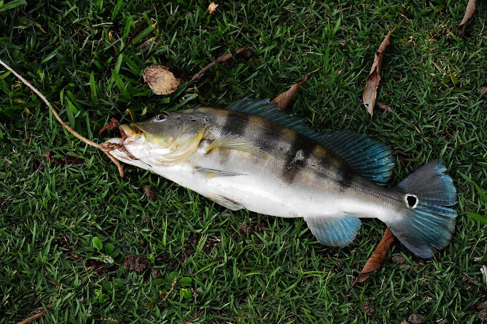
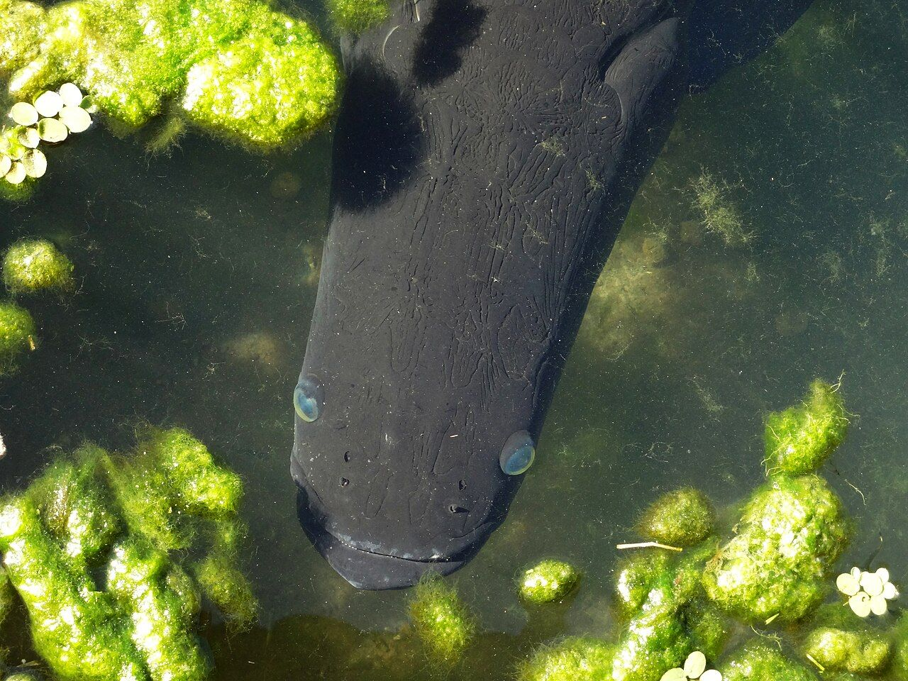
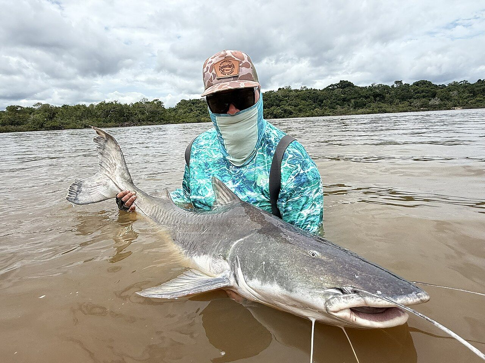
A onça-pintada é o maior felino das Américas e o maior predador terrestre do Brasil. Por ficar no topo da cadeia alimentar, a presença dela diz que o ambiente em volta está saudável, e ela ajuda a controlar as populações das presas.
Só que onça não vive em fazenda cercada: precisa de áreas grandes e de caminho entre elas. Segundo a diretora do Instituto Onça-Pintada, Anah Jácomo, oitenta por cento das onças do Brasil vivem fora de reservas do governo. Por isso a conservação depende muito dos donos das terras onde elas passam.
É aí que entra o Araguaia. O corredor da onça é um projeto de conservação ao longo do rio, com cerca de três mil quilômetros e treze milhões de hectares, da divisa de Goiás com Mato Grosso, passando pelo Tocantins, até o Pará. Ele liga a Amazônia e o Cerrado. A ideia é que grupos de onças de regiões diferentes possam se encontrar, o que deixa a espécie mais forte. Como já contamos, um estudo do instituto apontou o Araguaia, com o Tocantins, como a melhor ligação entre as regiões do país com populações viáveis de onça.
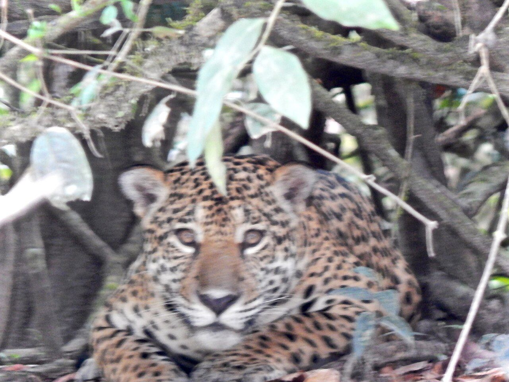
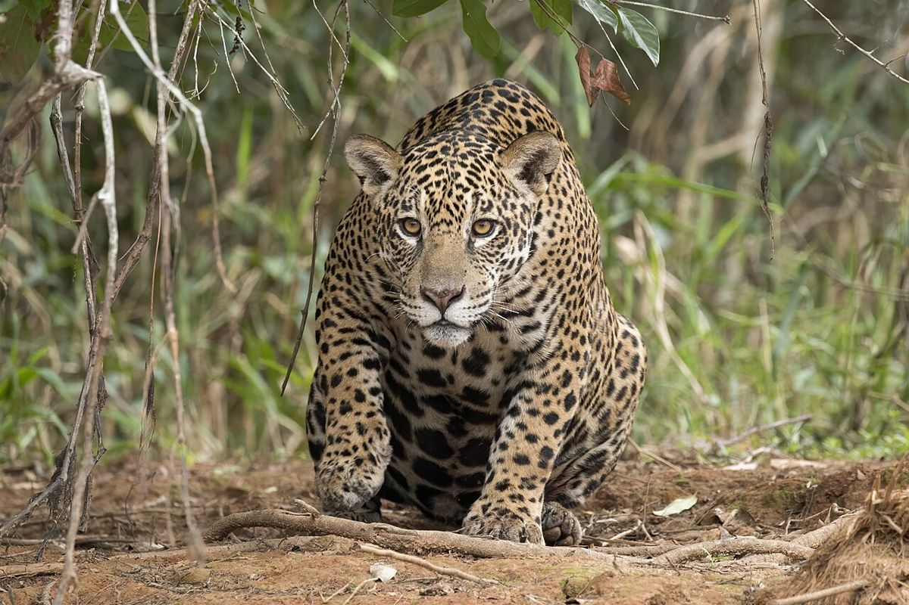
Quem toca o corredor é o Instituto Onça-Pintada (IOP), criado em 2002 pelos biólogos Anah Jácomo e Leandro Silveira. É uma das referências no estudo e na conservação da onça: há mais de vinte anos o instituto acompanha os animais em campo, com coleiras de GPS e armadilhas fotográficas, e trabalha junto com os produtores rurais, porque é nas fazendas que boa parte das onças vive.
Proteger a onça é proteger tudo o que vive em volta dela: o rio, a mata da beira e os bichos que ela caça. Onde ainda tem onça, o lugar ainda está inteiro.
Quer conhecer o trabalho deles? O site do instituto é institutooncapintada.org.br.
Na bacia Araguaia-Tocantins, a piraíba não pode ser pescada para consumo: é peixe de soltar, e soltar bem faz diferença, porque o peixe manuseado com cuidado tem mais chance de sobreviver.
O tambaqui, que aparece cada vez mais nas pescarias do Araguaia, não é daqui. Escapou de criações e já se reproduz no rio. Peixe de tanque não vai para o rio.
E o boto-do-araguaia é considerado vulnerável à extinção. A praia cheia de barco na seca é também a casa dele, e o lixo que fica na areia vai parar na água.
Todas do Wikimedia Commons, com licença que permite uso comercial. Foram reduzidas para a página.


.jpg){kind=link}

_female_Piquiri_River_2.JPG){kind=link}